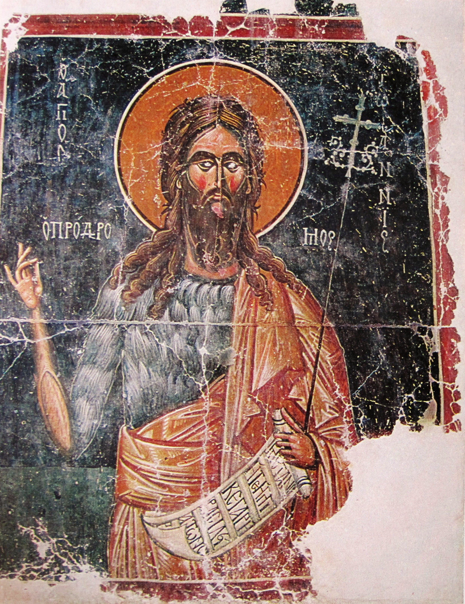

| Yes, no: | 👍 ναί, 👎 οὔ. |
| Tone of voice: | ἐν ἀρχῇ ἦν ὁ λόγος; ναί, ἐν ἀρχῇ ἦν ὁ λόγος. |
| Or: | ναὶ ἢ οὔ; |
| Who, whose, whom? | 👫 τίς; διὰ τίνος; ἐν τίνι; πρὸς τίνα; |
| What? | 📦 τί; διὰ τίνος; ἐν τίνι; πρὸς τί; |
| When? | 🕝 πότε; |
| Where? (new!) | 🏛 ποῦ; |
Ἐν ἀρχῇ ἦν ὁ λόγος, καὶ ὁ λόγος ἦν πρὸς τὸν θεόν, καὶ θεὸς ἦν ὁ λόγος. οὗτος ἦν ἐν ἀρχῇ πρὸς τὸν θεόν. πάντα δι’ αὐτοῦ ἐγένετο, καὶ χωρὶς αὐτοῦ ἐγένετο οὐδὲ ἕν. ὃ γέγονεν ἐν αὐτῷ ζωὴ ἦν, καὶ ἡ ζωὴ ἦν τὸ φῶς τῶν ἀνθρώπων· καὶ τὸ φῶς ἐν τῇ σκοτίᾳ φαίνει, καὶ ἡ σκοτία αὐτὸ οὐ κατέλαβεν.
👫 τίς ἦν πρὸς τὸν θεόν;
👫 πρὸς τίνα ἦν ὁ λόγος;
🏛 ποῦ ἦν ὁ λόγος ἐν ἀρχῇ;
🕝 πότε ἦν ὁ λόγος πρὸς τὸν θεόν;
Ἐν ἀρχῇ ἦν ὁ λόγος, καὶ ὁ λόγος ἦν πρὸς τὸν θεόν, καὶ θεὸς ἦν ὁ λόγος. οὗτος ἦν ἐν ἀρχῇ πρὸς τὸν θεόν. πάντα δι’ αὐτοῦ ἐγένετο, καὶ χωρὶς αὐτοῦ ἐγένετο οὐδὲ ἕν. ὃ γέγονεν ἐν αὐτῷ ζωὴ ἦν, καὶ ἡ ζωὴ ἦν τὸ φῶς τῶν ἀνθρώπων· καὶ τὸ φῶς ἐν τῇ σκοτίᾳ φαίνει, καὶ ἡ σκοτία αὐτὸ οὐ κατέλαβεν.
ὁ θεὸς ἦν λόγος
ἢ
θεὸς ἦν ὁ λόγος;
Ἐν ἀρχῇ ἦν ὁ λόγος, καὶ ὁ λόγος ἦν πρὸς τὸν θεόν, καὶ θεὸς ἦν ὁ λόγος. οὗτος ἦν ἐν ἀρχῇ πρὸς τὸν θεόν. πάντα δι’ αὐτοῦ ἐγένετο, καὶ χωρὶς αὐτοῦ ἐγένετο οὐδὲ ἕν. ὃ γέγονεν ἐν αὐτῷ ζωὴ ἦν, καὶ ἡ ζωὴ ἦν τὸ φῶς τῶν ἀνθρώπων· καὶ τὸ φῶς ἐν τῇ σκοτίᾳ φαίνει, καὶ ἡ σκοτία αὐτὸ οὐ κατέλαβεν.
λόγος ἦν ὁ θεὸς
ἢ
ὁ λόγος ἦν θεὸς;
Ἐν ἀρχῇ ἦν ὁ λόγος, καὶ ὁ λόγος ἦν πρὸς τὸν θεόν, καὶ θεὸς ἦν ὁ λόγος. οὗτος ἦν ἐν ἀρχῇ πρὸς τὸν θεόν. πάντα δι’ αὐτοῦ ἐγένετο, καὶ χωρὶς αὐτοῦ ἐγένετο οὐδὲ ἕν. ὃ γέγονεν ἐν αὐτῷ ζωὴ ἦν, καὶ ἡ ζωὴ ἦν τὸ φῶς τῶν ἀνθρώπων· καὶ τὸ φῶς ἐν τῇ σκοτίᾳ φαίνει, καὶ ἡ σκοτία αὐτὸ οὐ κατέλαβεν.
📦 τί ἐγένετο διὰ τοῦ λόγου;
📦 τί ἐγένετο χωρὶς τοῦ λόγου;
📦 τί ἦν ὃ γέγονεν ἐν τῷ λόγῳ;
📦 τί ἦν ἡ ζωἠ;
Ἐν ἀρχῇ ἦν ὁ λόγος, καὶ ὁ λόγος ἦν πρὸς τὸν θεόν, καὶ θεὸς ἦν ὁ λόγος. οὗτος ἦν ἐν ἀρχῇ πρὸς τὸν θεόν. πάντα δι’ αὐτοῦ ἐγένετο, καὶ χωρὶς αὐτοῦ ἐγένετο οὐδὲ ἕν. ὃ γέγονεν ἐν αὐτῷ ζωὴ ἦν, καὶ ἡ ζωὴ ἦν τὸ φῶς τῶν ἀνθρώπων· καὶ τὸ φῶς ἐν τῇ σκοτίᾳ φαίνει, καὶ ἡ σκοτία αὐτὸ οὐ κατέλαβεν.
📦 τί φαίνει;
📦 ἐν τίνι φαίνει τὸ φῶς;
κατέλαβεν ἡ σκοτία τὸ φῶς;
Ἐγένετο ἄνθρωπος
ἀπεσταλμένος παρὰ θεοῦ,
ὄνομα αὐτῷ Ἰωάννης·
οὗτος ἦλθεν εἰς μαρτυρίαν,
ἵνα μαρτυρήσῃ περὶ τοῦ φωτός,
ἵνα πάντες πιστεύσωσιν δι’ αὐτοῦ.
Ἐγένετο ἄνθρωπος ἀπεσταλμένος παρὰ θεοῦ, ὄνομα αὐτῷ Ἰωάννης·
Ἐγένετο ἄνθρωπος ἀπεσταλμένος παρὰ θεοῦ, ὄνομα αὐτῷ Ἰωάννης·
Ἐγένετο ἄνθρωπος ἀπεσταλμένος παρὰ θεοῦ, ὄνομα αὐτῷ Ἰωάννης·
τί ὄνομά σοι;
Ἰωνάθαν ὄνομά μοι.
τί ὄνομά σοι;
Ἰωήλ; Κυνθία; Παύλος;
Ἐμμανουήλ; Σειρῆνες; Βασίλειος;
Ἰωνάθαν;
Ἐγένετο ἄνθρωπος ἀπεσταλμένος παρὰ θεοῦ, ὄνομα αὐτῷ Ἰωάννης·
Ἐγένετο ἄνθρωπος ἀπεσταλμένος παρὰ θεοῦ, ὄνομα αὐτῷ Ἰωάννης·
Ἐγένετο ἄνθρωπος ἀπεσταλμένος παρὰ θεοῦ, ὄνομα αὐτῷ Ἰωάννης·
Ἐγένετο ἄνθρωπος ἀπεσταλμένος παρὰ θεοῦ, ὄνομα αὐτῷ Ἰωάννης·
τίς ἐγένετο;
τί ὄνομα αὐτῷ;
παρὰ τίνος
ἦν Ἰωάννης ἀπεσταλμένος;
τίς ἀπέστειλεν Ἰωάννην;
Ἐγένετο ἄνθρωπος
ἀπεσταλμένος παρὰ θεοῦ,
ὄνομα αὐτῷ Ἰωάννης·
οὗτος ἦλθεν εἰς μαρτυρίαν,
ἵνα μαρτυρήσῃ περὶ τοῦ φωτός,
οὗτος ἦλθεν εἰς μαρτυρίαν, ἵνα μαρτυρήσῃ περὶ τοῦ φωτός,
οὗτος ἦλθεν εἰς μαρτυρίαν, ἵνα μαρτυρήσῃ περὶ τοῦ φωτός,
ἦλθεν εἰς μαρτυρίαν
ὁ μάρτυς - the witness
μαρτυρεῖν - to witness
ἡ μαρτυρία - testimony, evidence
μαρτυρεῖ ὁ μάρτυς.
τίς μαρτυρεῖ;
ἦλθεν ὁ μάρτυς εἰς μαρτυρίαν.
εἰς τίνα ἦλθεν ὁ μάρτυς;
οὗτος ἦλθεν εἰς μαρτυρίαν, ἵνα μαρτυρήσῃ περὶ τοῦ φωτός,
ἵνα μαρτυρήσῃ περὶ τοῦ φωτός
περὶ τίνος μαρτυρεῖ ὁ μάρτυς;
οὗτος ἦλθεν εἰς μαρτυρίαν, ἵνα μαρτυρήσῃ περὶ τοῦ φωτός
🤔 διὰ τί; — why?
διὰ τί ἦλθεν ὁ μάρτυς;
Ἐγένετο ἄνθρωπος
ἀπεσταλμένος παρὰ θεοῦ,
ὄνομα αὐτῷ Ἰωάννης·
οὗτος ἦλθεν εἰς μαρτυρίαν,
ἵνα μαρτυρήσῃ περὶ τοῦ φωτός,
ἵνα πάντες πιστεύσωσιν δι’ αὐτοῦ.
ἵνα πάντες πιστεύσωσιν δι’ αὐτοῦ
ἵνα πάντες πιστεύσωσιν δι’ αὐτοῦ
πάντες πιστεύ-ωσιν
ἵνα πάντες πιστεύ-σ-ωσιν
ἵνα πάντες πιστεύ-σ-ωσιν δι’ Ἰωάννου.
ἵνα πάντες πιστεύ-σ-ωσιν δι’ αὐτοῦ.
Ἐγένετο ἄνθρωπος
ἀπεσταλμένος παρὰ θεοῦ,
ὄνομα αὐτῷ Ἰωάννης·
οὗτος ἦλθεν εἰς μαρτυρίαν,
ἵνα μαρτυρήσῃ περὶ τοῦ φωτός,
ἵνα πάντες πιστεύσωσιν δι’ αὐτοῦ.
τίς ἐι;
αὐτ__ Ἰωνάθαν ἐι.
αὐτ__ Κυνθία ἐι.
αὐτ__ Σειρῆνες ἐι.
αὐτ__ Παύλος ἐι.
ὄνομα αὐτ__ Ἰωνάθαν.
ὄνομα αὐτ__ Κυνθία.
ὄνομα αὐτ__ Σειρῆνες.
ὄνομα αὐτ__ Παύλος.
| nominative | genitive | dative | accusative |
|---|---|---|---|
| τίς; | διὰ τίνος; | τίνι ὄνομα; | εἰς τίνα; |
| 👨 αὐτός | δι’ αὐτοῦ | ὄνομα αὐτῷ | εἰς αὐτόν |
| 👩 αὐτή | δι’ αὐτῆς | ὄνομα αὐτῇ | εἰς αὐτήν |